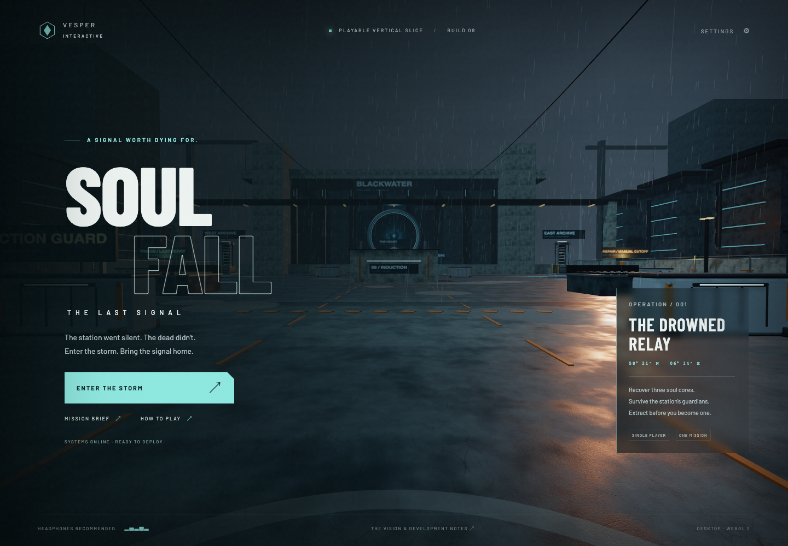
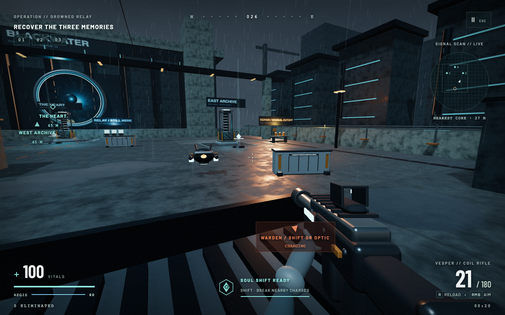
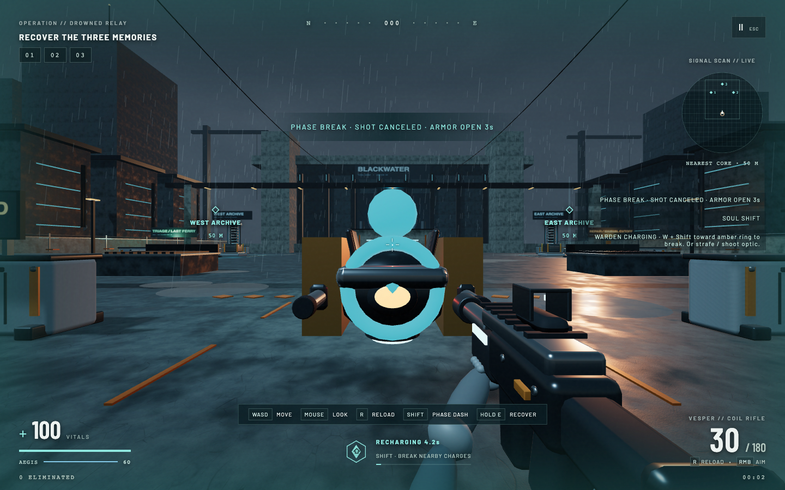
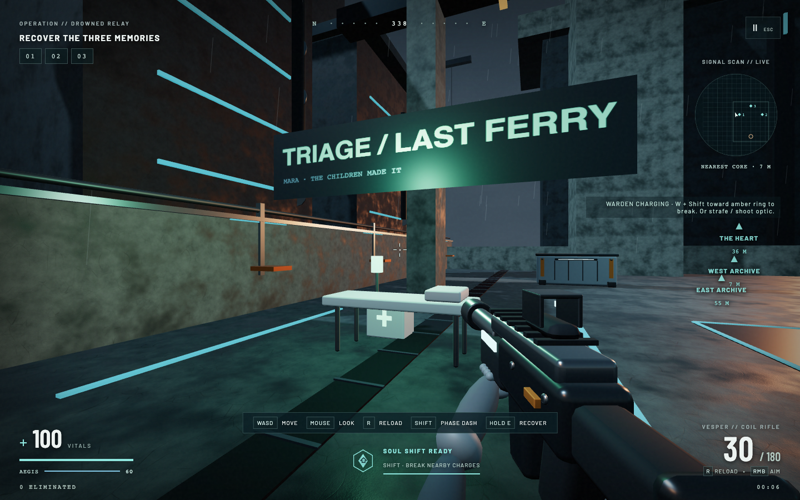
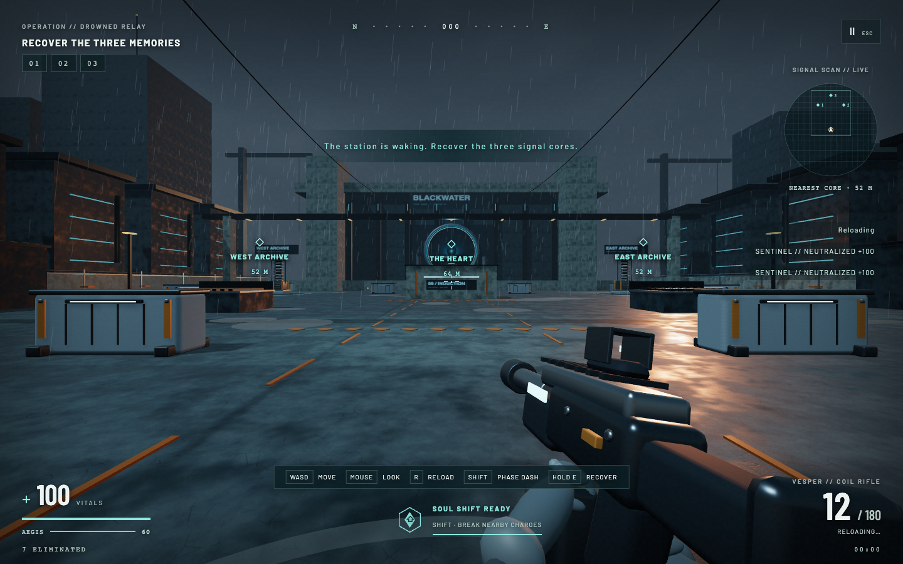
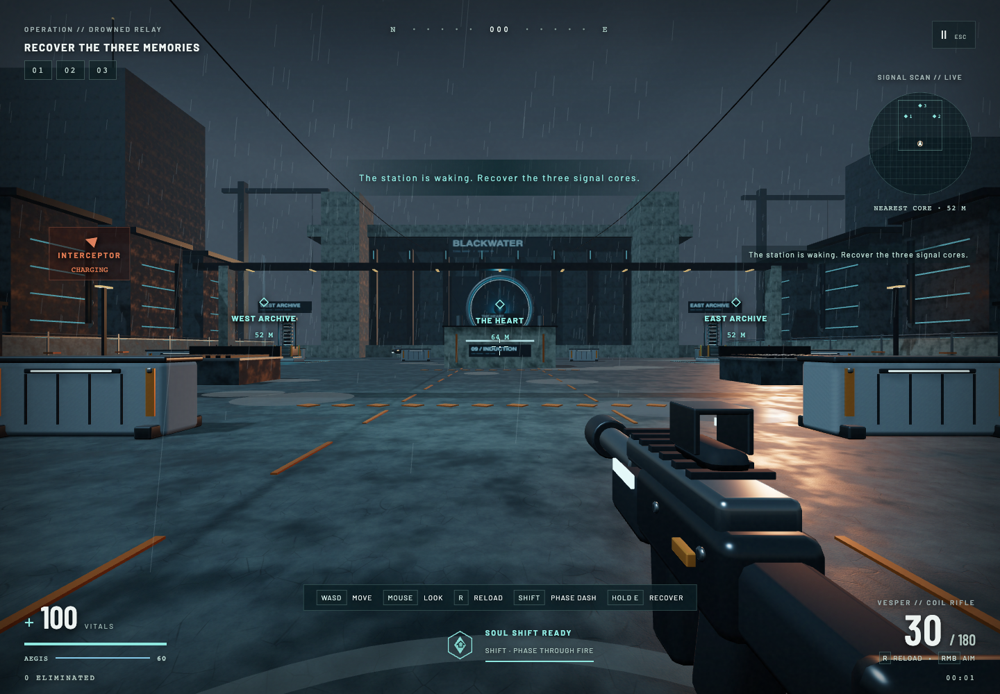

01 · Breach
Deploy at the southern insertion point. Read the courtyard, identify cover, and locate the cyan signal sites. Initial sentinels establish the rules.
The Last Signal.
A complete web FPS mission. A distinctive foundation for a much bigger game.

The old jump moved the camera while horizontal collision still assumed grounded feet, and could only land at floor height. The new player cylinder uses a 0.4 m radius, 1.9 m body and unchanged 1.7 m eye offset. Horizontal tests use the actual vertical interval. Motion is subdivided to at most 1/120 second and 0.08 m horizontal travel, with swept vertical floor/top and ceiling crossings. Standing support is rechecked after movement; walking off immediately releases support into gravity. Landing only catches a crossed top from above, never snaps a side entry upward. Jump requires existing support and a fresh keydown; repeated midair presses do not add impulse. Pause freezes movement, restart resets height and velocity.
Geometry audit: the two service vents at x ±14, z 9 have 1.1 m concrete, a 1.2 m rim, visible grate bars topping at 1.315 m, and a front lip topping at 1.75 m. All now collide at their visible heights. A continuous support envelope spans the grate bars rather than allowing feet between narrow teeth. Jump speed increases from 7 to 8 m/s with unchanged gravity 21 m/s² (1.524 m ideal rise, about 0.762 s floor-to-floor). Rear/side jumps onto the grate become deliberate optional routes; the front lip blocks a floor jump. Ground approaches to every memory and extraction remain available. Barricade collision now derives from each rotated original GLB mesh (unrotated cap top 1.52 m), replacing the oversized 1.6 m box. Separate cap/body/feet bounds prevent the wider floor feet from supplying floating top support. Its tiny jump clearance is not advertised as a reliable route. Four-metre capacitor roofs, five-metre pylons and perimeter remain inaccessible from the intended low platforms; no new assets or mandatory parkour.
Grounded enemy navigation keeps its existing separate footprint. Static Box3 cover continues to block weapon rays, enemy LOS and swept projectiles; player height already affects aim and projectile hit volumes. Phase keeps its distance/LOS check, damage, 4.5 s cooldown, 0.4 s protection and approach braking. Recovery uses a 3D range measured relative to floor eye height; extraction requires being within 0.5 m of ground eye height as well as inside the zone, preventing an elevated hold. Melee now requires reachable torso distance and clear LOS; supplies use 3D torso distance and LOS so neither hits nor pickups pass through raised cover. Ground melee and collection remain verified. Space is included in the field control ribbon. No enemy damage or health was raised.
Exactly two fresh native GPT-6.1 Sol reviewers inspected actual browser screenshots. Both retained provisional gameplay 7.5/10, presentation 7.5, usability 8, readability 7.5 and AAA readiness 2.5. The normal reviewer used visible views and ordinary controls, without teleporting, resource edits, enemy arrangements or exact-position decisions. Its first early jump failed; the second close W+Space approach mounted the grate, stayed at eye height 3.015 m during combat and walked off to 1.7 m. It fired 14 rounds with no hits/kills and took 19 shield damage while raised. This demonstrates an available route and continued vulnerability, not combat advantage or blind human learnability. The other reviewer used explicitly arranged controlled-frame fixtures and found the melee/supply/ribbon issues fixed above. Normal review with observations · normal control transcript driver · Physics review · nine browser fixtures.

Final validation: development and production smoke each passed 14 checks; combat, phase/audio, phase usability, finite encounters, playtest and mission/archive suites passed. Standalone movement checks cover landing/rest/walkoff at 20/30/60/144 Hz, low obstacle clearance, side rejection, ceiling, high wall/perimeter air dash and unsupported/repeated jump rejection. Nine arranged browser fixtures verify actual geometry, raised projectiles/phase, pause/restart, vertical recovery, melee and supplies. The encounter writer now uses a latest filename and phase screenshots use current filenames, preserving Build08/09 historical evidence.
The first integration normal-input mission won all three memories with 13 kills, 54.18 simulated seconds, 100 health/60 shield and 49% accuracy; the final post-followup run also won with all three memories, 13 kills, 50.57 simulated seconds, 100 health/60 shield and 59% accuracy. This controller uses exact enemy/collision observations and automated timing, so mission completion cannot establish human enjoyment or balance. Initial integration run · final integration run.
Remaining limits: first-jump timing and optional-route affordances need human validation; the barricade cap has only about 3.8 mm ideal jump clearance and is not a promised route. Static mesh AABBs remain conservative, especially at rotations; no exhaustive geometry-seam or hardware performance certification is claimed. Shared-courtyard scope, limited encounter variety, simple character/handling animation, audio listening and human enjoyment remain unresolved. Technical checks do not measure enjoyment, blind discovery, audio quality or AAA readiness. Original assets, Blender sources and historical reviews remain intact. The overall quality mission remains ongoing.
The Build08 visible-cue reviewer found that a successful dash passed the guard, leaving its opened armor behind the camera. Root reproduced this in a controlled opening: after the dash the guard was behind the view. A successful dash toward a charging threat now stops its remaining burst travel at the break. This does not turn the camera, deal damage, extend protection or reset cooldown; sideways/escape dodges retain their travel. Ordinary continued movement remains under the player's control.
Two fresh GPT-6.1 Sol reviewers then replayed the opening from visible cues. Both achieved a break and kept the guard in view for a normal weapon follow-up. One reviewer completed two opening attempts, including a continuous cue-to-break-to-critical-kill sequence without a pause between cue and kill. It used prior screenshot knowledge and automated cue reaction, so this remains agent-assisted evidence, not blind human learning or enjoyment.
The original Heart label covered the warden's optic at both desktop sizes. The first fix shifted it upward; the reviewers confirmed clear targeting but found a small overlap with the announcement and giant physical warning board. Final behavior instead fades central objective labels while ADS or a nearer visible threat occupies that aiming region. Radar and off-axis goals remain, and the label returns when focus moves away. This prioritizes the target without moving another label onto the announcement.
The oversized floating ten-metre instruction board was replaced by a smaller placard mounted on the entry barricade beside the lane; contextual HUD coaching still offers phase, precision and flank tactics. Warden emitter materials now use matching darker base colors and bounded amber/cyan emission through charge, stagger and armor-open states. Actual post-fix renders were inspected. These small visual followups have not been independently rescored.
The targeted browser regression checks target-focus label opacity in hip/ADS at1280×800 and1440×900, marker return, forward-break followup position, unchanged health/protection/cooldown, and full lateral travel. Existing phase/handling, finite encounter and production smoke suites passed. Original reproductions · post-fix checks · visible-cue review · second review · control observations · layout observations.

The overall10/10 goal remains unmet. The same courtyard, simple enemy forms, limited content and absence of human enjoyment/audio validation still limit the build. A further movement audit also confirmed that horizontal collision assumes grounded feet even when the player is airborne; the current jump cannot support standing on cover. The controlled observation compares camera/feet height to the collision box, not the higher rendered grate; any movement upgrade must audit both geometry and colliders rather than simply ignoring obstacles while jumping.
This implementation replaces immediate seven-enemy crossfire with one induction warden and finite location-triggered escalation. The quality mission remains ongoing: neither reviewer awarded 10/10. These are automated agent prototype judgments, not human feedback or AAA certification.
Two fresh GPT-6.1 Sol reviews: combat gameplay 7.5/10, presentation 7.5, usability/readability 8, AAA readiness 2.5; visible-cue reviewer gameplay 7, opening pacing 7.5, presentation 7.5, usability 8, readability 7.5, AAA readiness 2.5. Ratings predate the small sign-fitting and furniture-support corrections below; they have not been rescored.
blender -b --python tools/build_memory_props.py. Earlier sources remain. Perimeter placement keeps flat generous routes; simple solid bounds prevent walking through props. Props use static material batches; animated/restored core materials retain their dynamic exclusions.The visible-cue reviewer’s first ordinary W+Shift response missed: one dash, zero breaks, two evades. A fresh ordinary ingress then produced one dash and one break, full health/shield and no shots fired. Decisions used rendered cues without reading enemy positions or rearranging the encounter; the successful run used automated reaction to the visible CHARGING label, prior mechanic knowledge and pauses. It establishes that the interaction is available in ordinary ingress, not blind human discovery or enjoyment. The dash carried the guard behind the camera, making follow-up use of opened armor less obvious. A west bypass continued to 9.98 seconds at 100 health/56 shield with no kills.
The integration exact-position normal-controls controller won with all three memories, 13 kills, 52.63 simulated seconds, 100 health/60 shield, 49% accuracy and zero dashes/breaks. The independent combat controller also won: 57.49 seconds, 13 kills, 45% accuracy, zero dashes/breaks. Both observe exact enemy/collision information and are substantially advantaged. A separate ordinary opening using exact-windup timing achieved one break; arranged art captures are labeled separately. Phase is optional and its sustained value for human players remains unproven.
Development and production smoke checks passed 14 each. Combat 6, playtest 3, mission/archive 5 and phase/handling/audio 3 checks passed, plus four new encounter contracts: finite once-only stages, armored/open damage, independent optic damage and both bypasses/all-core route connectivity with solid prop bounds. The regeneration fixture now clears threats after crossing stage triggers so it continues testing a safe interval. Initial spawn assertions explicitly change from seven to one. No test removes cover collision, aim/substep, restart, ADS/input, archive or audio protections. The normal-controls exercise above ran through actual input with no teleport, resource edits or simulation advance.
Both reviewers found clipped long sign headings and floating console/cutoff details. Final integration fits text to the canvas and adds authored pedestals, display/cutoff supports and stool base, then recaptures all three bays. Also aligned hit-event damage reporting with actual armor damage. Raw review reports/captures remain unchanged. Build07 raw reports and screenshots are preserved; prior changing regression JSON snapshots are under quality-reviews/build07-baseline/.
Visible-cue review and control transcript · visible raw · combat review · combat raw mission · labeled arranged observations · integration control run · encounter contracts.

Final engineering render · final relay render · ordinary visible-cue break · integration victory.
Remaining limits: one shared courtyard, related drone silhouettes, simple procedural character/furniture forms, overshooting phase follow-up, bright optic/objective-marker overlap, limited replay variation, and no blind human play, perceptual audio review, broad accessibility audit or target-hardware certification. Installed Chrome/Playwright remained the established fallback after shared preview timeouts. These passing checks and bounded improvements do not establish AAA perfection; parent continues the quality mission.
This bounded pass adds a deliberate close-range answer to a charged shot, original Blender gloves/sleeves and an articulated reload cell, plus a restrained synthesized wind/turbine bed and directional charge cues. The 10/10 target is still unmet. Two fresh independent GPT-6.1 Sol agents inspected actual Chrome gameplay and screenshots. Their ratings are provisional agent judgments, not human feedback or AAA certification.
Fresh ratings: gameplay 7/10; presentation 7.5/10; usability 8/10; level readability 8/10; AAA readiness 2.5/10 from both reviewers. The new counter is concrete optional counterplay and the support-hand contact improves presentation. One arena, limited enemy/content variety, primitive glove anatomy and limited animation remain substantial gaps.
blender -b --python tools/build_viewmodel.py. Original rifle/assets/material sources are preserved.Development and production smoke suites passed all 14 checks each. Combat (6), playtest (3), mission (5), and new phase/handling checks passed in installed Chrome with real WebGL. The new suite verifies canceled windup, unchanged enemy health, 0.8s stagger, retained cooldown, cover/range exclusions, paused audio staying suspended even after wake, one bed across restarts and mute. The combat suite's controlled animation loop originally stalled Playwright's default animation-frame polling; timer polling fixed that test synchronization, and all six gameplay checks then passed. The final production rerun also exposed the dossier test’s obsolete exact two-image assertion after adding a third evidence image; it now checks a minimum gallery and validates every image loads.
The normal-controls controller completed all three recoveries and extraction: 18 kills, 100 health, 49 shield, 42% accuracy, 60.07 simulated seconds, zero dashes and zero breaks. It uses exact enemy positions and collision-map routing; this is not a blind human win and does not justify higher damage. The combat reviewer separately exercised real Shift/W during an arranged visible charge: the shot canceled, enemy health remained100, no projectile spawned, repeated Shift was blocked and the enemy resumed later. Natural encounter frequency and player desire to use this close counter remain unproven. The experience review's simple active movement/ADS segment died before its planned firing/reload inputs; its report explicitly records that limitation.
Both reviewers found the reload exchange mostly below frame. The final integration reduces support reach/pull and cell travel and slightly raises the weapon during reload; a new render was inspected after this correction. Also corrected BUILD07 title text and replaced unsupported “blue sparks” wording with emitter-flash wording. Review ratings predate those small final fixes and have not been independently rescored.
Independent combat review · independent experience review · combat raw run · arranged phase raw run · experience raw observations · phase/handling graph checks · integration normal-controls run. Prior baseline JSON reports are retained under quality-reviews/build06-baseline/; prior independent reviews remain intact.

Final ADS aperture · normal-controls result. Shared preview reported unavailable; installed Chrome/Playwright was the established fallback. Graph checks do not validate the perceived sound mix. No human auditory session, enjoyment study, target-hardware performance certification or broad accessibility audit occurred. Next work should address more legible authored hand/cell manipulation, richer encounter staging/content and human use of phase timing; no perfection claim follows from passing tests.
Two separate GPT-6.1 Sol reviewers performed browser runs and candid assessments across three rounds. The developer continued after both the initial review and the first re-review. Scores below are their actual provisional judgments. They are not human audience data or certification.
AAA production readiness was rated 2/10 by the combat reviewer and 2.5/10 by the latest experience reviewer. The stronger interface and loop do not remove the limits of one arena, simplified art and animation, and limited encounter content. Build 06's Blender-baked material changes are newer than those ratings and have not been independently rescored.
tools/build_materials.py. Maps were baked in Blender Cycles, not downloaded.The last normal-control combat reviewer completed all recoveries and six-second extraction with19 eliminations and no browser exceptions. Its exact-position aim and route planner are substantial advantages; its full-health win does not justify raising damage for human players. The same review's movement-only test took meaningful damage. Remaining opportunities include phase-specific encounter depth, authored weapon/hands animation, more environmental storytelling and variety, and professional sound/content work.
Reports: 03 combat · 03 experience · 04 combat · 04 experience · 05 combat · 05 experience. Targeted rules: recovery, extraction and archive checks. Technical test success is tracked separately from quality ratings.
Work remains. No reviewer has awarded10/10. Subsequent passes must preserve these reports, implement verifiable improvements and obtain fresh honest reviews. A high score must not be manufactured by changing the rubric or treating technical checks as subjective approval.
A separate GPT-6.1 Sol subagent reviewed the game with browser controls and targeted reproductions. It found two reproducible defects: enemy projectiles could cross concrete depending on their frame alignment, and restarting retained zoom/recoil presentation. This was an automated agent review, not independent human feedback.
Independent pre-fix report · Root post-fix evidence. Reproduce with the dev server running: npm run test:combat. Six targeted checks pass, covering timing, aim, blocked and unobstructed projectiles, restart state, and a visible muzzle flash on slow frames. A follow-up render check caught and corrected flashes expiring before their first display on a 100 ms frame. The updated normal-control automated run also recovered all three cores, eliminated 17 enemies and extracted, with no browser exceptions; the run is recorded here. It retains the same exact-position and route-planning advantages described below. These are bounded correctness checks; they do not establish perfection or subjective enjoyment.
Status: independent human feedback is pending. This is a prototype. No numerical quality score is assigned. Functional tests and an automated controller do not establish fun, visual realism, commercial appeal, or AAA production readiness.
A normal-control automated combat run of the initial build recovered all three cores, eliminated 17 enemies, and extracted with full health. It used mouse movement events, firing, WASD, reload, and E; it did not teleport, clear enemies, alter resources, or accelerate simulation. The controller had exact enemy positions and a collision-map route planner. Its success is evidence of completion through controls, not evidence of human difficulty or balance. The software renderer and screenshots also affected wall-clock timings.
Records: initial normal-control run and limitations · fix verification. Reproduce with a running dev server: npm run test:playtest and npm run playtest:controls.
Can a new player find the objectives without coaching? Does aiming feel responsive? Are enemy charge cues understandable? Is Soul Shift useful rather than unnecessary? Does the return trip feel different? Is a second attempt appealing? These remain questions for actual players. The next changes should follow their specific observations, not a self-awarded rating.
At a coastal station built to preserve human memory, the dead have begun transmitting a distress call. You are the operator sent to bring them home.
SOULFALL is a first-person recovery shooter about pushing into danger for something worth saving. You breach the Drowned Relay, reclaim three soul cores under escalating resistance, and fight your way back to extraction. Your rifle rewards precision; your Soul Shift dash rewards timing. The setting is cold, physical, and industrial. Its supernatural element is a small, legible rule with a strong emotional frame.
The studio pitch: a premium, atmospheric campaign FPS whose central combat verb is a short phase dash through telegraphed incoming fire. The full production would build human stories around the memories being recovered. This prototype demonstrates one arena, the complete recovery loop, and the visual/combat direction.
I think the strongest element is the relationship between theme and action: you are literally carrying lost lives out of a hostile machine. The mission is readable without a lore lecture. A player can understand the objective, feel the stakes, and discover the dash's tactical uses in the first encounter.
Deploy at the southern insertion point. Read the courtyard, identify cover, and locate the cyan signal sites. Initial sentinels establish the rules.
Approach a core and hold E to recover its memory. Each recovery restores shields, offers health and ammunition, and introduces reinforcements. The order is yours.
Use cover, aim for critical hits, collect enemy supply drops, reload between threats, and dash when a sentinel charges. Surviving creates momentum.
Return all three cores to the green extraction ring at insertion. A scored result closes the mission. Failure offers an immediate clean restart.
The game includes title, briefing, controls, difficulty selection, sensitivity and volume settings, reduced camera motion, pause/resume, success/failure screens, score, and local personal bests. It is one self-contained single-player operation, with no account requirement.

Decision: use a roughly 74 × 84 metre playable footprint with a central splitter, lateral routes and cover islands. Why: sightlines, navigation, and flanking matter immediately. A compact environment lets the same space become more dangerous on the return trip and keeps the whole mission finishable.
Decision: recover three spatially separated cores, then return to insertion. Why: the player owns route selection, but the mission has a clear endpoint. Extraction transforms familiar ground into a final commitment. The last pickup is the beginning of the last act.
Decision: a 4.5-second cooldown dash, with collision respected. Why: the player can counter a telegraphed attack and cross a short exposed gap. It is a timing tool rather than a permanent escape. Solidity still matters; the dash cannot pass through concrete.
Decision: an automatic coil rifle with 30-round magazine, 1.65-second reload, ADS, recoil, critical hits, and ammunition economy. Why: a coherent primary weapon supports a polished loop better than several incomplete guns. Body hits deal 34 damage; head hits deal 82. Precision materially reduces exposure.
Decision: orange/red sentinels charge before shooting, aim at a previously sampled position, and fire visible projectiles. Faster stalkers press closer; standard sentinels maintain distance. Why: movement and dash can answer danger. Local steering, separation, cover occlusion and strafing create a fight with changing angles.
Decision: 100 health, 60 regenerating shield, guaranteed enemy supplies, and recovery rewards at objectives. Why: cautious play offers shield recovery, while successful aggression offers ammunition and modest healing. The player has reasons to leave cover. Shield regeneration begins after five seconds without damage.
Decision: finite reinforcements on recoveries, rather than an endless spawner. Why: the defense response is consequential, but completion is achievable. A player can stabilize a dangerous situation and see progress.
Decision: Recon, Operator, and Veteran tune enemy health, damage, movement, and firing cadence. Why: the prototype should be explorable by a studio reviewer and demanding for an experienced player. Settings disclose that difficulty changes apply on next deployment.
Decision: cyan signals life/recovery/player technology; orange marks industrial hazards and hostile fire; green signals active extraction. Why: quick combat reading and a coherent brand. Text, shapes, HUD progress, and beams supplement color.
Decision: restrained typography, small operation labels, a clear health/shield pair, ammunition, core count, compass, objective tracking and cooldown. Why: information belongs at the edges; the target belongs in the center. The front end feels like an operational briefing rather than an unrelated launcher.
Decision: synthesize gun reports, impact confirmation, charge warnings, reloads, footsteps and recovery stingers using Web Audio. Why: immediate action feedback without licensing ambiguity or a heavy audio download. This is an authored prototype soundscape; a production needs dedicated sound design and spatial mix.
Decision: prioritize mouse and keyboard, pause on focus loss, retain sensitivity/volume/motion preferences locally, and offer a drag-to-look fallback when pointer lock is unavailable. Why: precision aiming needs dependable input. Reduced camera motion removes bob and recoil motion; keyboard focus remains visible in menus.
The mood is a North Atlantic industrial dusk: slate concrete, brushed titanium, graphite machinery, wet ground, cold cloud light, and small warm service lamps. Brutalist masses, overhead gantries, suspended cable runs, harbor cranes, and the turbine silhouette establish scale beyond the combat floor.
Four original assets were actually built in Blender: the induction signal pylon, reinforced barricade, machine sentinel, and first-person coil rifle. Their meshes use beveled edges and material separation for metal, rubber, safety enamel, concrete and emissive conductors. The source is retained in public/assets/soulfall-assets.blend; the reproducible authoring/export script is tools/build_assets.py. Exported GLBs live beside the source.
Large modular architecture is authored in Three.js. Concrete maps and a reflection environment are generated locally. Puddles use glossy physical materials; rain uses batched line geometry. This is real-time PBR rasterization with shadows and tone mapping. It is not ray-traced photorealism, and the prototype does not claim production-level scanned surfaces or character fidelity.
Why I like the art: the large turbine, cyan core sites, and compressed skyline give the courtyard an identity. The assets support the encounter's logic: a pylon announces an objective, a barricade supplies protection, a red optic announces an opponent. Beauty and navigation share the same geometry.
Blender exports were checked for valid glTF headers and nonempty geometry. Asset meshes are joined by material; static architecture is merged to reduce draw calls. The game loads the actual GLBs, with weapon/enemy fallback geometry for resilience. No commercial game models or third-party sound recordings were imported. Barlow and Barlow Condensed fonts are bundled locally under their included SIL Open Font Licenses.
world.js owns environment creation; game.js owns simulation and rendering; audio.js owns synthesis; main.js owns menus and HUD. Two additional GPT-6.1 Sol agents contributed environment/assets and gameplay, with root integration and verification.?test=1 URL enables the deterministic debug interface used by the browser tests. Normal play does not expose that interface.npm ci
npm run dev
# production
npm run build
npm run preview
# browser verification
npm testUse the project's Play SOULFALL T3 Code script, or open Vite's printed local URL. The shipped dist/ includes this dossier. A desktop WebGL 2 browser and hardware acceleration are the intended environment.
The verification record below is maintained against this build. Automated tests use a real Chromium browser and the actual WebGL game, not a mocked engine. Deterministic hooks make state transitions and edge cases repeatable; screenshots document the actual rendered result. These are engineering checks and visual inspection, not independent human fun validation.
Recorded run: 2026-11-01T00:07:10.400Z · 156.0.8078.76. The same 14 scenarios passed against development and the built production bundle hosted beneath the repository subpath. Production build completed successfully. No browser errors or failed HTTP responses were observed.
Additional gameplay-agent checks: concrete blocked rifle damage; an unobstructed critical hit dealt 82 damage; active enemy AI reduced shield from 60 to 3 over eight simulated seconds. Collision-respecting movement reached all cores and extraction without teleporting. Enemies were cleared during that route check to isolate traversal; it is not a human combat playthrough.
Machine-readable evidence: development suite, production suite, targeted gameplay suite. Initial failures uncovered and corrected keyboard focus, oversized weapon framing, asset cleanup ownership, retained dash invulnerability on restart, a malformed stylesheet import, and a missing document favicon. Production-subpath checks verified asset and dossier links.
How good has been verified: functional correctness can be checked with assertions; visual coherence can be inspected; subjective fun and commercial appeal require people. No external playtest panel, studio approval, target-hardware performance certification, or accessibility audit has occurred. This document does not turn a passing smoke test into a claim of AAA readiness.
The case is the combination: a clear emotional premise, a cinematic place, precision gunplay, a signature movement ability, recoveries that change encounter pressure, and an extraction finale. Those elements can support a trailer, a hands-on demo and a campaign pitch in the same vocabulary. The browser makes the initial hands-on demo easy to distribute.
What I like most is the pace change when the third core is recovered. The space stops being a collection of objectives and becomes the route home. Soul Shift has a natural place in that reversal: it is both a way to commit and a way to escape.
A major production might retain the browser prototype as a pitch and move to an engine with mature high-end content tooling. That decision should follow target hardware, team expertise, fidelity budget, and distribution strategy. The gameplay thesis is portable; this codebase is not a substitute for a AAA studio pipeline.
The delivered scope is one complete playable mission. It is not “the perfect FPS,” a full campaign, or a commercial AAA release. Perfection is not a testable completion criterion. This project instead supplies a reviewable game, original source assets, reproducible builds, browser tests, and the rationale behind the decisions.
What would change my mind: if independent players do not enjoy the gunplay, understand the dash, or feel a satisfying shift during extraction, the core pitch needs revision before expanding content. The next investment should be player evidence, not more untested features.
My assessment: SOULFALL has a coherent hook and a complete encounter arc worth putting in front of players and a studio. The prototype earns a conversation through something playable. Its commercial potential remains a hypothesis to validate.